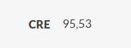

Dados gerais
Nome
Ana Lívia Bezerra Raposo
Nascimento
18/06/2006 (18 anos)
Naturalidade
Campina Grande
Estado civil
Solteira (assim eu espero)
Player de Ana
Ana Lívia
Nome da música
Skills
- Atletismo 100
- Inteligência 100
- Dedicação 96
- Beleza 100
a

Sempre foi ativa no esportes, sendo a melhor no handebol e campeã invicta do interclasse do IFPB campus Monteiro durante 2022 a 2025 e sendo a mulher mais forte do mundo hoje em dia.
a


Sendo a menina mais inteligente que eu conheço, conseguiu um TCC nota 100 com sua amiga Marilu, e diversos outros feitos como tirar 900+ na redação e dois 1000 técnicos nos últimos fucking 4 anos, e além de sem esforço conseguir manter a 95+ durante o ensino médio e fundamental, e provavelmente algum dia vai tá entediada e vai acabar ganhando algum prêmio nobel.
a
Se adaptou e cresceu como pessoa no último ano, tendo que estudar pra passar em medicina, e mesmo com diversas dificuldades vem se dedicando a rotinas complexas para conseguir seus sonhos e objetivos.
simplesmente impecável, e incomparável com qualquer outra mulher do mundo.
Um adendo que Ana tem diversas outras qualidades/skills que não foram mencionada pela incapacidade do criador do blog de expressar isso com imagens.
Relações
Ana Lívia Bezerra Raposo, por suas habilidades e sua incrível personalidade, fez e valoriza as relações genuínas onde há amor e reciprocidade que ela tem.
Família
Amigos
Si mesmo
com Ele
Enquanto Ana é a segunda pessoa mais importante da vida dela, Deus é a pessoa mais importante, e é linda sua relação com e sua gratidão por saber que todas as suas relações, todas as suas capacidades e sua vida ela deve a Ele.